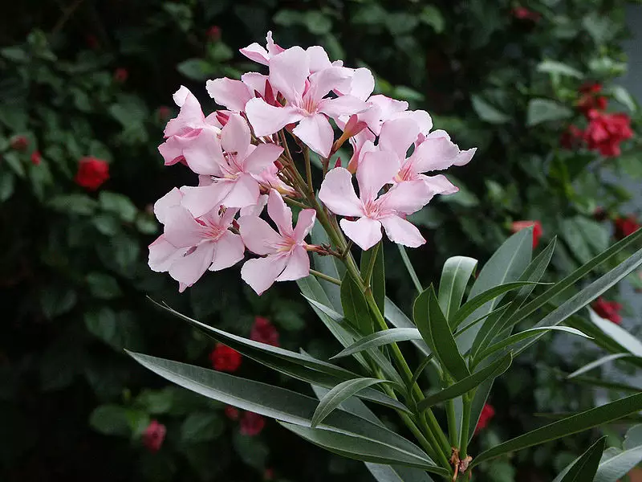

Meaning: Caution
Origin
The Victorians assigned the meaning of “caution” to the oleander, perhaps because the plant is poisonous, but also because of its association with the Greek cautionary myth of Hero and Leander. The two were in love, and although they lived on opposite sides of the Hellespont Sea, Leander swam across it every night to visit Hero. One night, during a violent storm, Leander died while trying to swim to his love in the rough waters. When Hero saw Leander’s body washed ashore, she called out, “O, Leander! O, Leander!” and drowned herself to be with him in death.
Gallery
